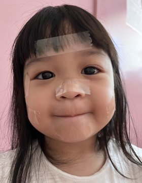
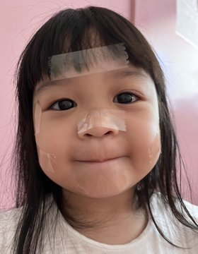

Hello! I am Ayesha Vernice Yeung. I am 15 years old and I was born on March 8, 2008. I can speak a total of 6 languages. I love playing sports and being active in general. In the weekend, I like to spend my time doing pilates, volleyball, piano, badminton and soccer.
I have 3 siblings who are younger. My favorite thing to do in the weekend is to spend time with them. We go to cafes, playhouses, parks, and the movies.

 
